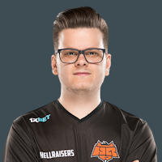

DeadFox — az első magyar Major-résztvevő
A magyar Counter-Strike e-sport az elmúlt években jelentős fejlődésen ment keresztül, számos tehetséges játékos és csapat emelkedett ki a nemzetközi porondon. A kezdeti időkben a magyar játékosok főként kisebb, hazai versenyeken vettek részt, azonban az évek során egyre több nemzetközi megmérettetésen is bizonyították képességeiket.
Az egyik legkiemelkedőbb magyar játékos, DeadFox (Böröcz Bence), aki a HellRaisers csapatával három Major tornán is részt vett, és 2017-ben az ELEAGUE Major 2017 történelmet írt azzal, hogy ő lett az első magyar játékos, aki ilyen rangos eseményen szerepelt. Teljesítménye nemcsak a hazai, hanem a nemzetközi közösség figyelmét is felkeltette, és hozzájárult a magyar e-sport elismertségéhez.
